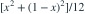

。给定 X=x，Y、Z 条件独立，分别服从 U(0,x)、U(x,1)。令 R=Z−Y，
。给定 X=x，Y、Z 条件独立，分别服从 U(0,x)、U(x,1)。令 R=Z−Y， 为？
为？- A

- B

- C
- D

我已思考，展开答案与解析
正确答案：D
- 条件均值恒为1/2；条件方差为

。对 x 积分得1/18，条件均值的方差为0。
易错提醒先明确分布参数、独立性和统计量的定义，再进行计算。
资料校订：明确给定 X 后 Y、Z 条件独立。
用户提供练手卷 · 原第 45 题；题目 PDF 第 8 页
单选改编；题干与选项已重新编排
。给定 X=x，Y、Z 条件独立，分别服从 U(0,x)、U(x,1)。令 R=Z−Y， 为？
。对 x 积分得1/18，条件均值的方差为0。资料校订：明确给定 X 后 Y、Z 条件独立。
用户提供练手卷 · 原第 45 题；题目 PDF 第 8 页
单选改编；题干与选项已重新编排